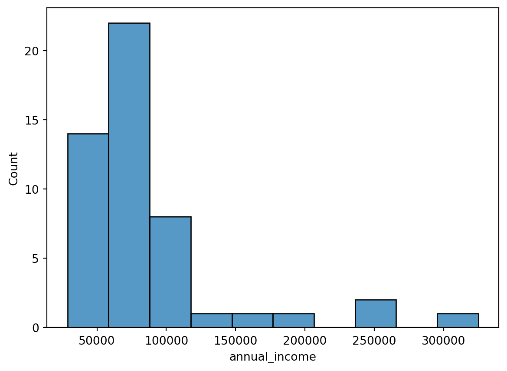
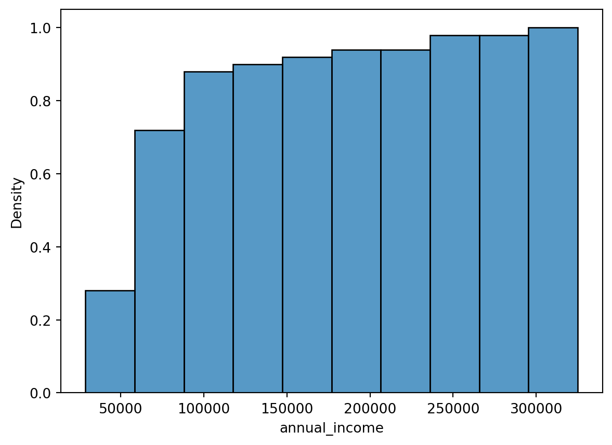

2 Data Sets
Ein sauber aufbereiteter Datensatz ist eine grundlegende Voraussetzung für jede datenbasierte Analyse und ist im CRISP-DM Teil der Datenaufbereitung. Wir starten zunächst mit dem Konzept von Tidy Data Section 2.1, welches sich mit der sauberen Strukturierung von Daten befasst. Anschließend werden wir uns mit den Typen von Variablen Section 2.2 befassen, die unter anderem den Ausschlag gibt, welche verschiedenen Visualisierungen Section 2.3 sinnvoll sind, um sich ein Data Understanding zu erarbeiten. Zum Schluss werden wir uns mit den verschiedenen Maßen für Variablen Section 2.4 auseinandersetzen, mit welchen man Datensätze beschreiben kann.
2.1 Tidy-Data
Wenn wir mit Computern automatisiert arbeiten möchten, ist neben der Semantik der Daten auch deren Syntax essenziell. Das bedeutet, dass die Daten in einer Struktur vorliegen müssen, die ihre Semantik sinnvoll abbildet.
Ein weitverbreiteter Standard, der in diesem Zusammenhang häufig genutzt wird, sind die von Wickham (2014) beschriebenen Tidy Data Conventions. Dieses Datenformat ist de facto eine Grundlage für viele Softwarepakete wie pandas, statsmodels, sklearn, tensorflow und andere Werkzeuge im Bereich Datenanalyse und des maschinelles Lernen.
Im Grunde handelt es sich bei diesem Format um ein Prinzip, das auch in der Datenbanknormalisierung nach Codd verfolgt wird. Ihnen wird dieses Konzept in relationalen Datenbanken (SQL) erneut begegnen.
2.1.1 Was bedeutet “Tidy Data”?
Tidy Data folgt drei Grundprinzipien:
- Jede Zeile repräsentiert eine Beobachtung (bzw. eine Einheit).
- Jede Spalte repräsentiert eine Variable (bzw. ein Attribut).
- Jede Zelle enthält genau einen präzisen Wert (einen primitiven Datentyp wie
int,float,stroderbool– keine Listen, Tupel oder geschachtelten Objekte).
Ein Beispiel für nicht-Tidy-Daten könnte eine Spalte enthalten, in der mehrere Werte in einer Liste zusammengefasst sind. Solche Daten sind schwerer zu verarbeiten und unflexibler beim Einsatz in Analysetools.
Tidy Data hilft uns bei der Datenbereinigung und Datenanalyse. Es erleichtert die Automatisierung und Standardisierung von Prozessen und reduziert die Wahrscheinlichkeit von Fehlern.
- Kompatibilität: Viele Python-Bibliotheken wie
pandas,statsmodelsoderseabornsetzen voraus, dass die verwendeten Daten im Tidy-Format vorliegen. - Automatisierung: Tidy-Daten erleichtern Standardoperationen wie Filtern, Gruppieren und Pivotieren erheblich.
- Fehlerprävention: Unstrukturierte oder verschachtelte Datenstrukturen sind fehleranfällig und schwer zu debuggen.
Es gibt viele hilfreiche Funktionen und Methoden in pandas, um Daten zu “tidy-fizieren”. Ein Beispiel ist die Verwendung der Methoden stack, unstack und melt. Diese helfen dabei, Daten umzustrukturieren und in die gewünschte lange (viele Zeilen) oder weite (viele Spalten) Form zu bringen. Ein hilfreicher Artikel hierzu ist Reshape with Pandas.
üí° Tipp: Wenn Sie unsicher sind, wie Sie Ihre Daten umorganisieren sollten, k√∂nnen Sie ein Beispiel (z.B. head() eines DataFrames) und die gew√ºnschte Struktur (also Spaltennamen) in ein Large Language Model eingeben. Oft erhalten Sie klare Vorschl√§ge zur Umstrukturierung!
2.1.2 Positive Beispiele für Tidy Data
Der folgende Beispielcode zeigt, wie Sie ein CSV-Datei laden und sich mit den ersten Zeilen vertraut machen können. Glücklicher Weise ist dieser Datensatz bereits im Tidy-Format. Jede Zeile repräsentiert eine Beobachtung (Kreditnehmer) und jede Spalte eine Variable (Attribut).
import pandas as pd
# Lesen der CSV-Datei in einen DataFrame
df = pd.read_csv(r"../_assets/dataexploratory/loan50.csv")
# Ausgabe der ersten Zeilen des Datensatzes
print(df.head()) state emp_length term homeownership annual_income verified_income \
0 NJ 3.0 60 rent 59000 Not Verified
1 CA 10.0 36 rent 60000 Not Verified
2 SC NaN 36 mortgage 75000 Verified
3 CA 0.0 36 rent 75000 Not Verified
4 OH 4.0 60 mortgage 254000 Not Verified
debt_to_income total_credit_limit total_credit_utilized \
0 0.557525 95131 32894
1 1.305683 51929 78341
2 1.056280 301373 79221
3 0.574347 59890 43076
4 0.238150 422619 60490
num_cc_carrying_balance loan_purpose loan_amount grade \
0 8 debt_consolidation 22000 B
1 2 credit_card 6000 B
2 14 debt_consolidation 25000 E
3 10 credit_card 6000 B
4 2 home_improvement 25000 B
interest_rate public_record_bankrupt loan_status has_second_income \
0 10.90 0 Current False
1 9.92 1 Current False
2 26.30 0 Current False
3 9.92 0 Current False
4 9.43 0 Current False
total_income
0 59000
1 60000
2 75000
3 75000
4 254000 2.1.3 Negative Beispiele für Tidy Data
Folgendes Datenbeispiel zeigt, wie ein Datensatz nicht im Tidy-Format aussieht. Wir sehen die Strombedarfe von verschiedenen Netzgebieten zone_id zu verschiedenen Zeitpunkten. Allerdings ist es ungünstig, dass nicht jede Kombination aus Zone und Zeitpunkt eine eigene Zeile hat. Stattdessen sind die Werte für alle 24 Stunden in einer eigenen Spalte.
import pandas as pd
df = pd.read_csv(r"../_assets/dataexploratory/GEFCom2012/GEFCOM2012_Data/Load/Load_history.csv")
print(df.head()) zone_id year month day h1 h2 h3 h4 h5 h6 \
0 1 2004 1 1 16,853 16,450 16,517 16,873 17,064 17,727
1 1 2004 1 2 14,155 14,038 14,019 14,489 14,920 16,072
2 1 2004 1 3 14,439 14,272 14,109 14,081 14,775 15,491
3 1 2004 1 4 11,273 10,415 9,943 9,859 9,881 10,248
4 1 2004 1 5 10,750 10,321 10,107 10,065 10,419 12,101
... h15 h16 h17 h18 h19 h20 h21 h22 \
0 ... 13,518 13,138 14,130 16,809 18,150 18,235 17,925 16,904
1 ... 16,127 15,448 15,839 17,727 18,895 18,650 18,443 17,580
2 ... 13,507 13,414 13,826 15,825 16,996 16,394 15,406 14,278
3 ... 14,207 13,614 14,162 16,237 17,430 17,218 16,633 15,238
4 ... 13,845 14,350 15,501 17,307 18,786 19,089 19,192 18,416
h23 h24
0 16,162 14,750
1 16,467 15,258
2 13,315 12,424
3 13,580 11,727
4 17,006 16,018
[5 rows x 28 columns]Eine Umwandlung in das Tidy-Format würde, wie folgt aussehen, wobei wird darauf achten sollten, dass der timestamp als datetime-Objekt und die load als int gespeichert wird:
| zone_id | timestamp | load (kW) |
|---|---|---|
| 1 | 2012-01-01 00:00:00 | 1000 |
| 1 | 2012-01-01 01:00:00 | 1100 |
2.2 Messniveaus von Variablen
Variablen sind die Bausteine von Daten und repräsentieren die Merkmale, die wir messen oder beobachten. Im Kapitel Section 2.2 werden wir uns noch tiefer mit Variablen auseinandersetzen. In der Datenanalyse ist es wichtig, die Art der Variablen zu kennen, da dies beeinflusst, welche Methoden und Visualisierungen für die Daten geeignet sind. Variablen lassen sich nach ihrem Messniveau klassifizieren, was wiederum die Art der Informationen beschreibt, die sie enthalten. Die bekannteste Klassifikation von Variablen basiert auf den vier Messniveaus von Stanley Smith Stevens: Nominal, Ordinal, Intervall und Ratio (Verhältnis).
Nutzen Sie den oben gezeigten Datensatz loan50, um die folgenden Aufgaben für unterschiedliche Variablenarten zu lösen:
Sortieren: Wie könnte man die Werte der Variablen
state,grade,- ein Beispiel für ein Intervallniveau (aber kein Ratio),
annual_income
sinnvoll in aufsteigender Reihenfolge anordnen?
Zentrale Werte bestimmen: Wie lässt sich ein zentraler Wert bestimmen, sei es durch den Modus, die Median oder den Mittelwert?
Beziehungen beschreiben: Welche Aussage könnte man über die Beziehung zwischen zwei Werten einer Variablen machen?
2.2.1 Nominale Variablen
Definition: Nominale Variablen kategorisieren Daten ohne eine festgelegte Reihenfolge.
df = pd.read_csv(r"../_assets/dataexploratory/loan50.csv")
print(df["state"].head())0 NJ
1 CA
2 SC
3 CA
4 OH
Name: state, dtype: objectprint(df["state"].value_counts().head())state
CA 9
TX 5
IL 4
NJ 3
MD 3
Name: count, dtype: int64print(df["state"].mode().head())0 CA
Name: state, dtype: object- Sortieren: Es gibt keine inhärente Methode, diese Werte zu sortieren. Dies liegt daran, dass nominale Daten keine Reihenfolge implizieren.
- Zentraler Wert: Modus, da dieser Wert am häufigsten vorkommt.
- Beziehungen: Die Beziehung zwischen zwei Werten kann nur beschreiben, ob sie in derselben Kategorie sind oder nicht.
2.2.2 Ordinale Variablen
Ordinale Variablen haben eine natürliche Ordnung, aber der Abstand zwischen den Werten ist nicht zwingend gleichmäßig.
print(df["grade"].head())0 B
1 B
2 E
3 B
4 B
Name: grade, dtype: objectprint(df["grade"].sort_values().head())49 A
18 A
33 A
36 A
14 A
Name: grade, dtype: objectprint(df["grade"].value_counts().head())grade
B 19
A 15
D 8
C 6
E 2
Name: count, dtype: int64print(df["grade"].mode())0 B
Name: grade, dtype: object# Define the order for the categorical values
grade_order = sorted(df["grade"].unique())
# Convert the 'grade' column to a categorical type with the specified order
df['grade'] = pd.Categorical(df['grade'], categories=grade_order, ordered=True)
# Convert categorical data to numerical codes
grade_codes = df['grade'].cat.codes
print(grade_codes.median())1.0- Sortieren: Mit geeigneten Regeln ist es möglich, diese Werte in aufsteigender Reihenfolge zu ordnen:
["C", "B", "A"]. - Zentraler Wert:: Der Modus ist geeignet, und der Median zeigt auf, dass 50 % der Werte gleich oder niedriger als
"B"sind. - Beziehungen: Zwei Werte lassen sich nach ihrer Position der Reihenfolge vergleichen: höher oder niedriger.
2.2.3 Intervallskalierte Variablen
Intervallskalierte Variablen haben geordnete Werte mit gleichmäßigen Abständen zwischen ihnen, aber sie besitzen keinen absoluten Nullpunkt. Ein Beispiel ist das jährliche Einkommen.
print(df["annual_income"].head())
print(df["annual_income"].mean())0 59000
1 60000
2 75000
3 75000
4 254000
Name: annual_income, dtype: int64
86170.0- Sortieren:: Daten können numerisch in aufsteigender Reihenfolge sortiert werden.
- Zentraler Wert:: Der Modus und Median sind geeignete Maße. Der arithmetische Mittelwert berechnet sich als: \(\mu = \frac{1}{n} \sum x_i\)
- Beziehungen: Der Abstand (Intervall) zwischen zwei Werten kann quantifiziert werden.
Im Gegensatz zum Ratio-Messniveau besitzen Intervall-Daten keinen absoluten Nullpunkt. Aussagen wie “das Doppelte” sind daher nicht sinnvoll.
Es ist oft hilfreich, sich das Messniveau einer Variablen vor Beginn der Analyse klar zu machen. Das Messniveau entscheidet auch, welche Visualisierung sinnvoll sind. Mögliche Fehleinschätzungen können zu falschen oder unzulässigen Berechnungen führen, z. B. Mittelwerte bei Nominaldaten. Daten sollten entsprechend ihrem Typ gereinigt und transformiert werden.
2.3 Visualisierungen
Es gibt viele Möglichkeiten, Daten zu visualisieren, um Muster und Trends zu erkennen. Zwei weit verbreitete Pakete sind matplotlib und plotly. Im folgenden benutzen wir vorallem seaborn, welches eine Erweiterung von matplotlib ist und speziell für statistische Visualisierungen entwickelt wurde.
2.3.1 Histogramme
Ein Histogramm ist eine angenäherte Darstellung der Verteilung einer intervallskalierten Variable. Es liefert wertvolle Informationen über:
- Zentralwert: Wo liegen die Daten?
- Varianz: Wie stark streuen die Daten?
- Verteilung: Wie häufig treten bestimmte Werte auf?
(fig:sec-dataexploratory-sets-histogram?) zeigt ein Histogramm des jährlichen Einkommens aus dem Datensatz loan50.
import seaborn as sns
import matplotlib.pyplot as plt
# Create a histogram of the annual income
sns.histplot(df["annual_income"], bins=10, stat = 'count')
2.3.1.1 Konstruktion eines Histogramms
Ein Histogramm wird in wenigen Schritten erstellt. Meinst wird dies bereits für uns wie in seaborn erledigt, es ist jedoch hilfreich, die Schritte zu kennen, um die Visualisierung besser zu verstehen, da sie manchmal abgewandelt wird.
- Binning: Teilen Sie die Werte der beobachteten Variablen \(x_i\) in eine Reihe von Intervallen (Bins oder Buckets) auf.
- Zählen: Erfassen Sie, wie viele Werte in jedes Intervall fallen (z. B. 5% der Werte).
- Intervall-Eigenschaften: Die Intervalle der Bins sollten aufeinander folgen, sich nicht überlappen und idealerweise die gleiche Breite haben.
- Darstellung: Die Anzahl der Werte in jedem Intervall wird entlang der y-Achse aufgetragen. Für relative Häufigkeiten wird durch die Stichprobengröße geteilt.
- Wenn die Intervalle gleich breit sind, wird die y-Achse als Häufigkeit interpretiert. Wenn die Intervalle unterschiedlich breit sind, wird die y-Achse als Dichte interpretiert. Dazu wird die Höhe der Balken so skaliert, dass die Fläche unter dem Histogramm \(1\) ergibt.
2.4 Maße für Variablen
Variablen lassen sich auf verschiedene Weisen beschreiben. Lagemaße bzw. die zentrale Tendenz gibt an, wo die Daten liegen, während die Streuung angibt, wie weit die Daten von diesem Wert entfernt sind. Die Zusammenhänge zwischen Variablen können durch Korrelationen und Kovarianzen beschrieben werden.
2.4.1 Lagemaße
Variablen können auf verschiedene Weisen beschrieben werden. Beispielweise können Lagemaße wie der Arithmetischer Mittelwert (Mean), Median oder Modus genutzt werden, um die zentrale Tendenz der Daten zu beschreiben. Welche wir einsetzen, hängt vom Messniveau der Variablen ab.
Betrachten wir eine mindestens intervall-skalierte Variable \(x \in \mathbb{R}^n\) aus den Datensatz, so können wir die folgenden Lagemaße berechnen:
- das maximale Element bzw. der Höchstwert: \[ x^{max} = \max_i x_i, \]
income_max = df["annual_income"].max()
print(f"{income_max=}")income_max=np.int64(325000)- der minimale Wert bzw. das Minimum:
income_min = df["annual_income"].min()
print(f"{income_min=}")income_min=np.int64(28800)\[ x^{min} = \min_i x_i, \] - der arithmetische Mittelwert: \[ \overline{x} = \frac1n \sum_{i=1}^n x_i = \frac{x_1 + x_2 + \cdots + x_n}{n}, \]
income_mean = df["annual_income"].mean()
print(f"{income_mean=}")income_mean=np.float64(86170.0)- der Median ist der Wert, der die Daten in zwei gleich große Teile teilt:
\[ \widetilde{x} = \begin{cases} x_{(n+1)/2}& n\quad \text{odd}\\ \frac{x_{n/2} + x_{n/2+1}}{2}& n\quad \text{even} \end{cases}, \]
income_median = df["annual_income"].median()
print(f"{income_median=}")income_median=np.float64(74000.0)- Verallgemeinert für \(p\in(0,1)\) ist das p-Quantil \(\overline{x}_p\) der Wert, der die Daten in zwei Teile teilt, wobei \(p\) der Anteil der Daten ist, die kleiner oder gleich \(\overline{x}_p\) sind.
income_quartiles = df["annual_income"].quantile([0.25, 0.5, 0.75])
print(f"{income_quartiles=}")income_quartiles=0.25 55750.0
0.50 74000.0
0.75 99500.0
Name: annual_income, dtype: float64\[ \overline{x}_p = \begin{cases} \frac12\left(x_{np} + x_{np+1}\right) & pn \in \mathbb{N}\\ x_{\lfloor np+1\rfloor} & pn \not\in \mathbb{N} \end{cases}. \]
Einige Quantile haben spezielle Namen, wie der Median für \(p=0.5\), das untere und obere Quartil für \(p=0.25\) und \(p=0.75\) (oder erstes, zweites (Median) und drittes Quartil), respektive.
Wie gut lassen sich Arithmetischer Mittelwert, Median und Mode aus dem Histogramm ablesen?
2.4.2 Kumulative Histogramme und Empirische Verteilungsfunktionen
Als Alternative haben sich kumulative Histogramme, wie in ?fig-sec-dataexploratory-sets-kum-histogram, etabliert, die die kumulative Verteilungsfunktion (Cumulative Density Function / CDF) visualisieren. Diese Funktion gibt an, wie viele Werte kleiner oder gleich einem bestimmten Wert sind. Zur Konstruktion der CDF werden die Daten in aufsteigender Reihenfolge sortiert und die relative Häufigkeit der Werte berechnet.
import seaborn as sns
import matplotlib.pyplot as plt
# Create a histogram of the annual income
sns.histplot(df["annual_income"], bins=10, stat = 'density', cumulative=True)
2.4.3 Steuungsmaße
Steuungsmaße beschreiben die Streuung der Daten um den zentralen Wert. Beispiele sind die Spannweite, Varianz und die Standardabweichung.
Die Spannweite ist die Differenz zwischen dem größten und kleinsten Wert: \[ \text{Spannweite} = x^{max} - x^{min}. \] Die Varianz ist ein Maß für die mittlere quadratische Abweichung der Daten vom Mittelwert. Die Einheit der Varianz ist das Quadrat der Einheit der Daten: \[ \sigma = \sqrt{\operatorname{Var}(x)}. \] \[ \operatorname{Var}(x) = \frac1n \sum_{i=1}^n (x_i - \mu)^2. \]
Die Standardabweichung ist die Quadratwurzel der Varianz. Damit hat sie die gleiche Einheit wie die Daten:
\[ \sigma = \sqrt{\operatorname{Var}(x)}. \]
In Python können wir die Varianz und Standardabweichung mit pandas oder numpy berechnen:
print(f"Varianz: {df['annual_income'].var()}")
print(f"Standardabweichung: {df['annual_income'].std()}")Varianz: 3313901734.6938777
Standardabweichung: 57566.49837096119Die Varianz einer Stichprobe ist kein erwartungstreuer Schätzer für die Varianz der Grundgesamtheit. Die Begriffe werden wir in Section 5.1 noch genauer betrachten. Einfach gesagt, die Varianz einer Stichprobe ist tendenziell kleiner als die Varianz der Grundgesamtheit, da wird beim zufälligen Ziehen wahrscheinlich eher aus der Mitte als von den Extremen ziehen. Die korrigierte Stichproben-Varianz wird durch \(n-1\) statt \(n\) im Nenner definiert. In pandas wird die korrigierte Stichproben-Varianz als Standard verwendet, die unkorrigierte Varianz kann mit dem Parameter ddof=0 berechnet werden.
2.4.4 Zusammenhangsmaße
In der Statistik beschreiben Zusammenhangsmaße die Beziehung zwischen zwei Variablen. Beispiele sind die Kovarianz und der Korrelationskoeffizient. Diese geben einen Hinweis darauf, ob und wie stark zwei Variablen zusammenhängen.
2.4.4.1 Korrrelation
In der Statistik beschreibt der Begriff Korrelation oder Abhängigkeit jede statistische Beziehung zwischen bivariaten Daten (gepaarte Daten) oder Zufallsvariablen.
In unserem Datensatz können wir beispielsweise untersuchen: - emp_length: Anzahl der Jahre im Beruf - annual_income: Jährliches Einkommen - debt_to_income: Schulden-Einkommens-Verhältnis
Um die Daten besser zu verstehen können wir zunächst einen Scatterplot ?fig-sec-dataexploratory-sets-scatterplot erstellen:
import seaborn as sns
df_reduced = df[["emp_length", "annual_income", "debt_to_income"]]
sns.pairplot(df_reduced)Wie interpretieren Sie den Zusammenhang zwischen den Variablen emp_length, annual_income und debt_to_income? Was würde entsprechend Ihres Domänenwissens Sinn ergeben?
2.4.4.2 Kovarianz
Die Kovarianz ist ein Maß für die gemeinsame Variabilität zweier Variablen. Sie ist definiert als der Erwartungswert des Produkts der Abweichungen der Zufallsvariablen von ihren Erwartungswerten:
\[ \operatorname{cov}(x, y) = \frac1n \sum_{i=1}^n (x_i - \overline{x})(y_i - \overline{y}). \]
In Python können wir die Kovarianz-Matrix mit pandas direkt berechnen:
df_reduced.cov()| emp_length | annual_income | debt_to_income | |
|---|---|---|---|
| emp_length | 12.393174 | 1.924082e+04 | -0.051111 |
| annual_income | 19240.824468 | 3.313902e+09 | -8584.039227 |
| debt_to_income | -0.051111 | -8.584039e+03 | 0.918269 |
Die Kovarianz kann Wertebereiche von \(-\infty\) bis \(+\infty\) annehmen und ist nicht normiert. Um die Stärke der Beziehung zu quantifizieren, verwenden wir den Korrelationskoeffizienten, der leichter zu interpretieren ist.
2.4.4.3 Korrelationskoeffizient
Der Korrelationskoeffizient nach Pearson ist ein Maß für den linearen Zusammenhang zwischen zwei Variablen. Er ist definiert als das Verhältnis der Kovarianz der beiden Variablen zur Multiplikation ihrer Standardabweichungen:
\[ \rho_{x,y} = \operatorname{corr}(x, y) = \frac{\operatorname{cov}(x, y)}{\sigma_x \sigma_y}, \]
wobei \(\sigma_x\) und \(\sigma_y\) die Standardabweichungen der Variablen sind.
In Python können wir den Korrelationskoeffizienten mit numpy berechnen:
df_reduced.corr()| emp_length | annual_income | debt_to_income | |
|---|---|---|---|
| emp_length | 1.000000 | 0.093156 | -0.014857 |
| annual_income | 0.093156 | 1.000000 | -0.155610 |
| debt_to_income | -0.014857 | -0.155610 | 1.000000 |
Ein Korrelationskoeffizient von \(1\) bedeutet eine perfekte positive Korrelation, \(-1\) eine perfekte negative Korrelation und \(0\) keine Korrelation. In diesem fall beobachten wir eine leichte negative Korrelation zwischen emp_length und debt_to_income und eine leichte positive Korrelation zwischen emp_length und annual_income. Eine Variable kann auch mit sich selbst perfekt korreliert sein, was zu einem Korrelationskoeffizienten von \(1\) führt.
Der Korrelationskoeffizient misst nur lineare Zusammenhänge. Nicht-lineare Zusammenhänge werden nicht erfasst. Es kann auch Zusammenhänge geben, die nicht durch den Korrelationskoeffizienten erfasst werden, z.B. wenn die Daten nicht normalverteilt sind. In Figure 2.1 sehen wir einige Beispiele in denen definitiv Korrelationen bestehen, die aber nicht durch den Korrelationskoeffizienten erfasst werden.

Eine hohe Korrelation bedeutet nicht notwendigerweise Kausalität. Es ist wichtig, die Daten und den Kontext zu verstehen, um sinnvolle Schlussfolgerungen zu ziehen. Ansonsten besteht die Gefahr, dass Zusammenhänge fehlinterpretiert werden. Ein bekanntes Beispiel ist die Korrelation zwischen der Anzahl der Piraten und der globalen Temperatur, die in Figure 2.2 dargestellt ist. In der Wissenschaft begegnet man diesem Problem mit kontrollierten Experimenten.

.svg){kind=link}